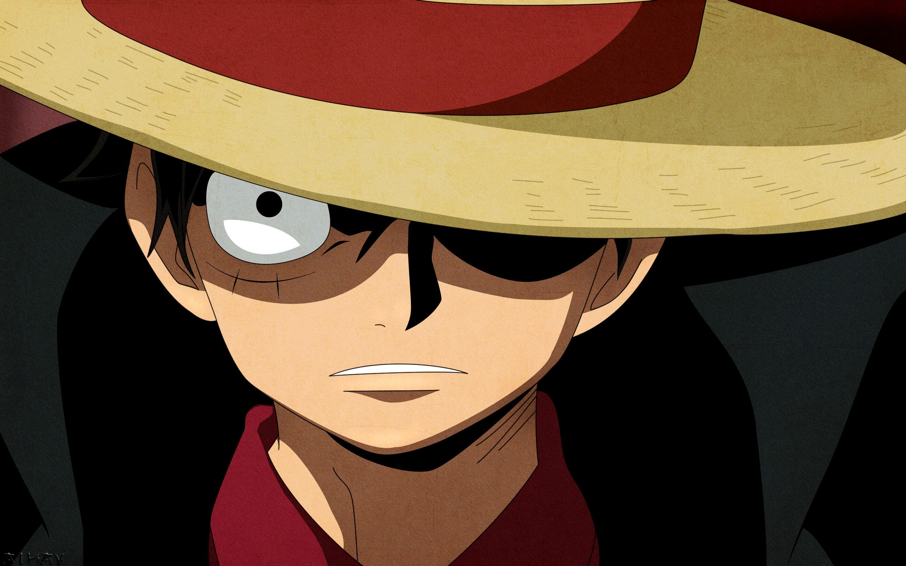
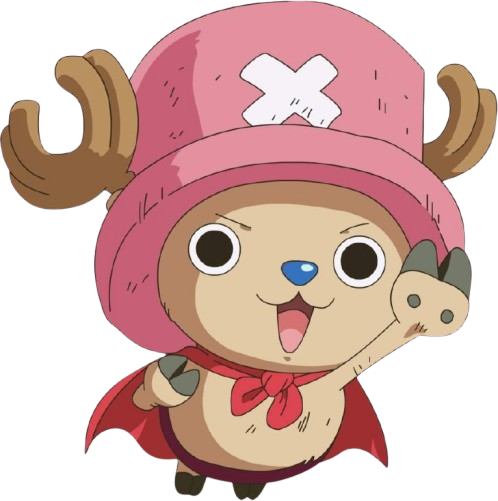

ONE PIECE
One Piece es un manga creado por Eiichiro Oda ,con adaptación al anime, consiste sobre un grupo de piratas llamados Los Sombrero de Paja(Muguiwaras), el capitan de la tripulacion es a su vez el protagonista de este iconico anime, la meta de cada uno de los tripulantes es distinta pero las conseguiran juntos mientras combatan contra otros piratas y el gobierno mundial.


One Piece es una serie de manga y anime creada por Eiichiro Oda que sigue las aventuras de Monkey D. Luffy y su tripulación de piratas, los Sombrero de Paja, en su búsqueda del legendario tesoro “One Piece”. La serie aborda temas profundos como el racismo (humanos vs. hombres-pez), la esclavitud (practicada por los Dragones Celestiales) y la corrupción (en el Gobierno Mundial).
One Piece
23/Octubre/2024 | Emiliano García